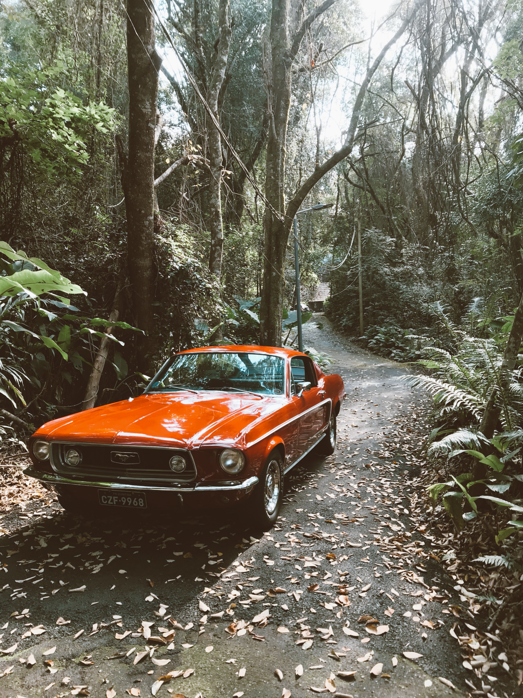
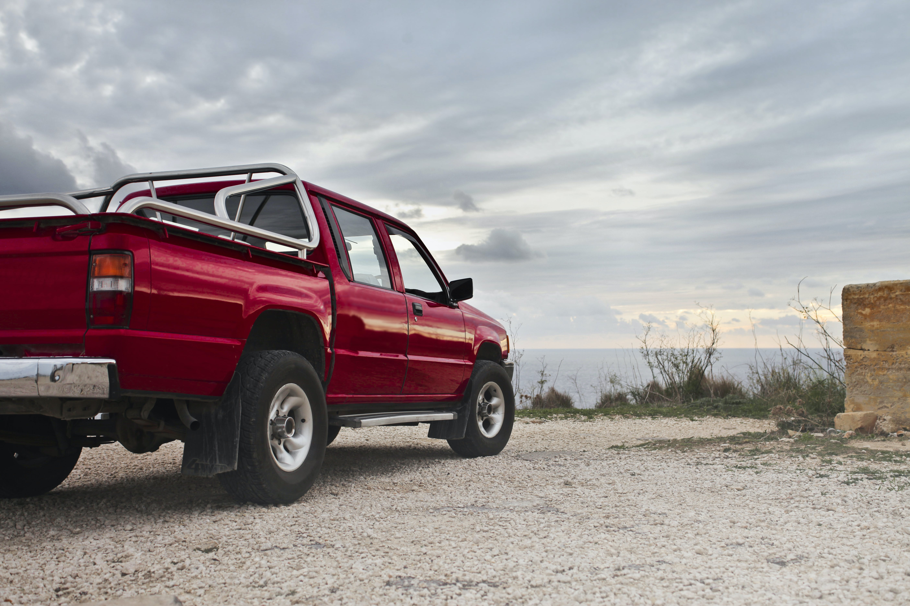

why cars are better
The debate between cars and trucks often boils down to individual needs and preferences, and both vehicle types have their advantages. However, there are scenarios where cars can be considered better than trucks for certain purposes. Here are some reasons why cars might be preferred over trucks:
- Fuel Efficiency: Cars are generally more fuel-efficient than trucks. They are designed with a focus on maximizing mileage and reducing fuel consumption, making them an economical choice for daily commuting and long-distance travel.
- Smaller Footprint: Cars are usually more compact and easier to maneuver in congested urban environments. They can fit into tight parking spaces and are generally more convenient for navigating through city traffic.
- Ride Comfort: Cars often provide a smoother and more comfortable ride due to their lower ground clearance and sedan-style design. This makes them a preferred choice for passengers seeking a comfortable and smooth driving experience.
- Lower Maintenance Costs: Cars tend to have lower maintenance and repair costs compared to trucks, as they typically have less complex and costly components.
- Environmental Impact: Cars typically produce fewer emissions than trucks, which can be an environmentally responsible choice for those who are conscious of their carbon footprint.
- Cost Savings: Cars are often more affordable to purchase than trucks, both in terms of the initial cost and ongoing operating expenses, including insurance, fuel, and maintenance.
- Family-Friendly: Sedans and compact cars are often better suited for families with children, offering comfortable seating, child safety features, and ease of access to car seats.
- Fuel Options: Many cars have fuel-efficient, alternative powertrains such as hybrids and electric vehicles, offering environmentally friendly choices for consumers.
- daptability: While trucks excel at carrying cargo and handling rugged terrain, cars are better suited for a wide range of daily tasks, from running errands and commuting to social outings and long road trips.
- Aesthetics: Cars are often appreciated for their sleek and stylish designs, which appeal to those who prioritize aesthetics in their vehicles.
why trucks are better
Trucks offer several advantages over cars in specific situations, and these advantages make them a preferred choice for many individuals. Here are some reasons why trucks might be considered better than cars:
- Hauling and Towing: Trucks are designed to carry heavy loads and tow trailers with ease. They have the capacity to transport large items, whether it's furniture, construction materials, or recreational vehicles. This makes them invaluable for work, home improvement projects, and outdoor activities.
- Off-Road Capability: Trucks, especially those with four-wheel drive or all-wheel drive, are well-equipped to handle rough terrain and challenging off-road conditions. This makes them suitable for outdoor enthusiasts, adventurers, and people living in areas with challenging road conditions.
- Versatility: Trucks are versatile vehicles that can adapt to various tasks. They serve as both workhorses and personal transportation, making them practical for people who require a single vehicle to meet a variety of needs.
- Payload Capacity: Trucks have a higher payload capacity than cars, meaning they can carry more weight in the bed of the truck. This is essential for businesses that rely on transporting goods and equipment.
- Taller Seating Position: Many people appreciate the elevated seating position in trucks, which provides better visibility of the road and surroundings. This can contribute to a feeling of safety and control while driving.
- Increased Safety in Collisions: Trucks tend to provide more protection in collisions due to their larger size and heavier build. This can be a reassuring factor for those concerned about safety on the road.
- Utility Features: Trucks often come equipped with features such as bed liners, tie-downs, and cargo management systems, which enhance their utility for various tasks.
- Towing Capabilities: Trucks are well-suited for towing trailers, boats, and other recreational vehicles, making them an ideal choice for outdoor enthusiasts, campers, and boaters.
- Durability: Trucks are built to withstand rough conditions and have durable suspensions and frames, making them a reliable choice for work in demanding environments.
- Resale Value: Trucks tend to retain their value well, and this can be a significant financial advantage if you decide to sell or trade in your vehicle in the future.